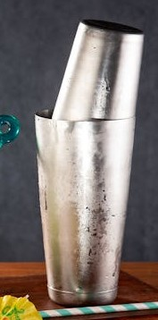
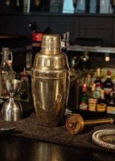
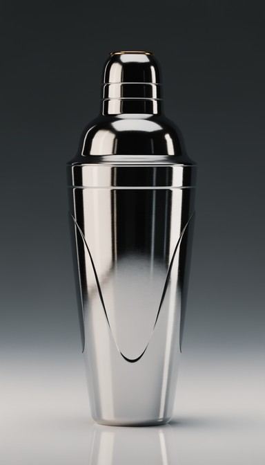

The history of cocktails is a varied one and hard to pin down at where it began Mixing drinks has been a long traidition, regrardles of where and when you look
throught history. From Homer's Iliad and ancient Greece to China's discovery of distalation and possibly the oldest cocktail still being drunk today in Ancient India's punch.
However i think the best starting point is very early 19th century! Why 19th century and specifically 1806 is because it's the first mention of the word "cocktail"
in The Balance and Columbian Repository(Hudson, New York) May 13, 1806. The 19th century is also important due the commercialization of ice and Two famous and influential
bartenders. Antione Peychaud and Jerry Thomas, Peychaud's Sazerac defined the early 19th with the introduction of bitters which are still used today. Jerry Thomas book
How to Mix Drinks was one of the earliest examples of mixology(the art of creating cocktails).
The event that defined the 20th century for cocktails in America was the prohibition. What was meant to reduce alchool consumption ended up backfiring immensely and increased
alchool consumption and ushering the Cocktail Renesanse. Following the end of the prohibition was the cocktails Tropical paradise era
With the tiki cockatils with the rum from the Caribbean islands dominating the scene. Which all culmulated in modern era and revival of the cocktail/craft.
Now you know a bit about how cocktail came to be what it is today
now we can move on to the ever important question of How to Create a Cocktail
Cocktail is split into Four equally important parts
The base is the most crucial part of the cocktail It's the one that dictates the rest of the steps
The base is the strongest in alchool% and flavour As such majority of the time it is a Spirit
The main culprits are Gin, vodtka, rum, whiskey, brandy and tequila each spirit has its unique taste profile
The secondary ingredient serves as the compliment to the base
It is usually weaker in alchool% but not necisarly in flavour
but using another spirit as a compliment is not unusually either
They add nuance and complexity
such as Vermouth, aperitivs and digestifs
The key to a well-balanced cocktail is choosing the right sweetener for the spirit and other ingredients involved.
Most cocktails contain at least a touch of sweetness, even if it's subtle. Sweeteners are essential for balancing
sharper flavors like citrus or bitter herbs. There are many ways to incorporate sweetness into a cocktail:
Getting the right balance is key for any cocktail
The final step in making a cocktail is the citrus/juice
Depending on the type of cocktail you're making it can represends the majority, half or a splash
The citrus is there to add the acidity to the cocktail while completing it
It also serves as the main counter-weight for the strenght of the drink
The cocktail shaker is the most important piece of equipment for a bartender shaking a cocktail has long been a quintessential technique while also giving a visual
flair that makes seeing your cocktail being made that more enjoyable Outside the visual flair the reason using shakers is quintessential is that
shaker is crucial to allow the ingredients to mix properly while the ice both dillutes and cools it down
There are various types of shakers:

The Boston shaker is a two-piece set consisting of a large metal tin and a smaller, metal tin
It is normally used with a separate strainer and its simple design and ease of use have made it a favorite in professional bars worldwide.

The cobbler shaker is the classic three-piece shaker that most people envision when thinking of cocktail shakers.
It features a metal container, a lid with built-in strainer, and a cap.
due to the in-built strainer it can only hold One cockatils worth of Ingredients

The Parisian Shaker:
Somewhere between the Tin-on-Tin and the Cobbler,
the Parisian shaker is a two-piece shaker consisting of two metal tins that fit into each other.
Whether you're making cocktails at home or mixing drinks in a hip cocktail bar, you'll likely need a strainer to make many of those drinks.
Cocktail strainers come in various shapes and sizes, each used for different situations.
There are four main strainers
When people think of a cocktail strainer, they are probably thinking of a Hawthorne Strainer.
A Hawthorne Strainer is a flat, metal straining tool with a coiled spring wrapped around its edge.
The spring helps it to fit snugly inside various mixers and shakers and helps to hold back ice and
larger ingredients such as fruits or muddled herbs. Its the most common of all strainers
A Julep Strainer looks like a large spoon with holes in it.
It is typically used with a mixing glass for straining cocktails that are stirred rather than shaken.
The Julep Strainer effectively filters out the larger solids from the drink
the Fine Mesh Strainer is a mini sieve with a very tight mesh.
It is usually used together with another strainer (like the Hawthorne or Julep),
to capture tiny particles, such as shards of ice, fine herbs, or citrus zest.
Using two strainers like this is referred to as "double straining"
A Built-in Strainer is found in the cap of a Cobbler Shaker
This type of shaker allows you to shake the cocktail and strain it straight away
without the need for a separate straining tool.
One of the most commonly used bar tools, a jigger is an hourglass-shaped measuring device, usually of
stainless steel, with uneven cones at each end for portioning out spirits. jiggers main usage is for their accuracy.
The two uneven cones that the jigger consists of are 50ml and 25ml respectivly(for Ireland and most of Europe)
The bigger cone is mainly used for the base(spirit) while the smaller is more used
for the supporting cast
Getting the right balance of ingredients is the key for any cocktail
The reason why the jiggers are built like that is so a bartender can put the narrow middle
of the jigger between two of their fingers. Giving them an easy access to both sides of the jigger and
an easy way to pour them in the shaker
There are several types of jiggers. They mainly differ in the size of the cones or artistic flair
The American Jigger is 1.5 oz (44 ml) and 0.75 oz (22 ml)
The UK/European Jigger which is 50ml and 25ml
The Japanese Jigger is a more sleeker type of jigger which allows for more accuraccy
with the cones being 2oz(58ml) and 1 oz (29ml)